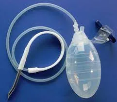
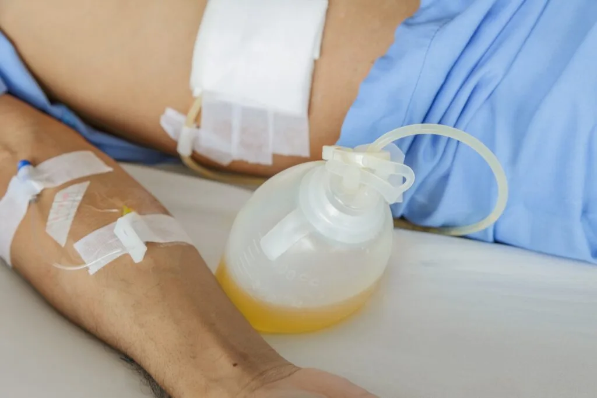
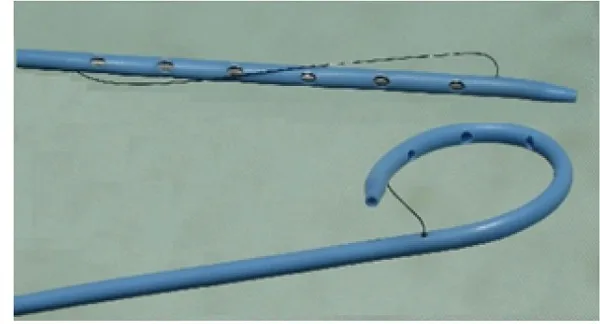
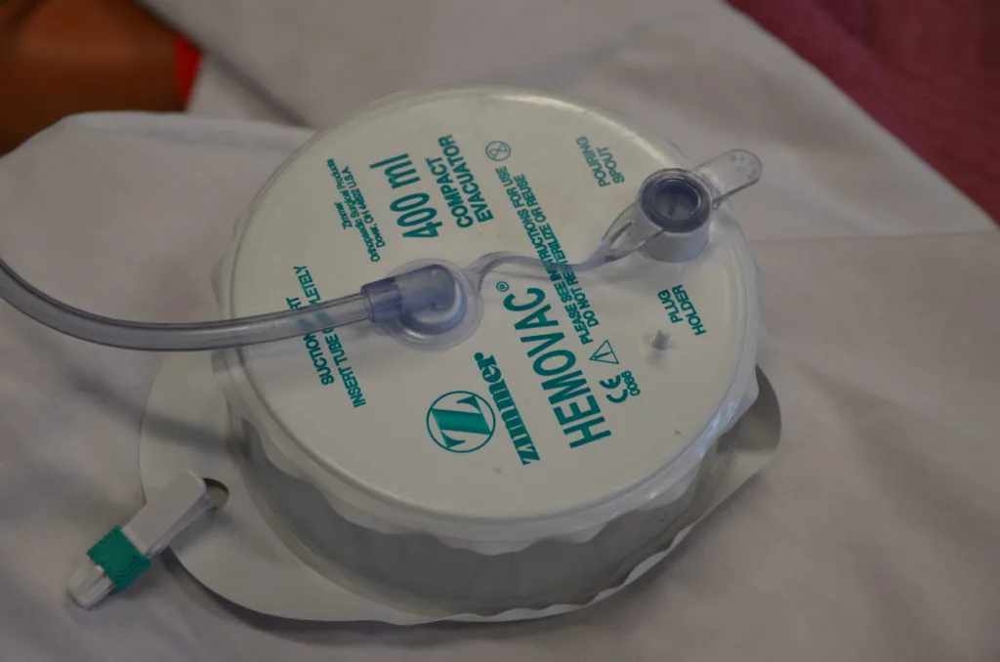
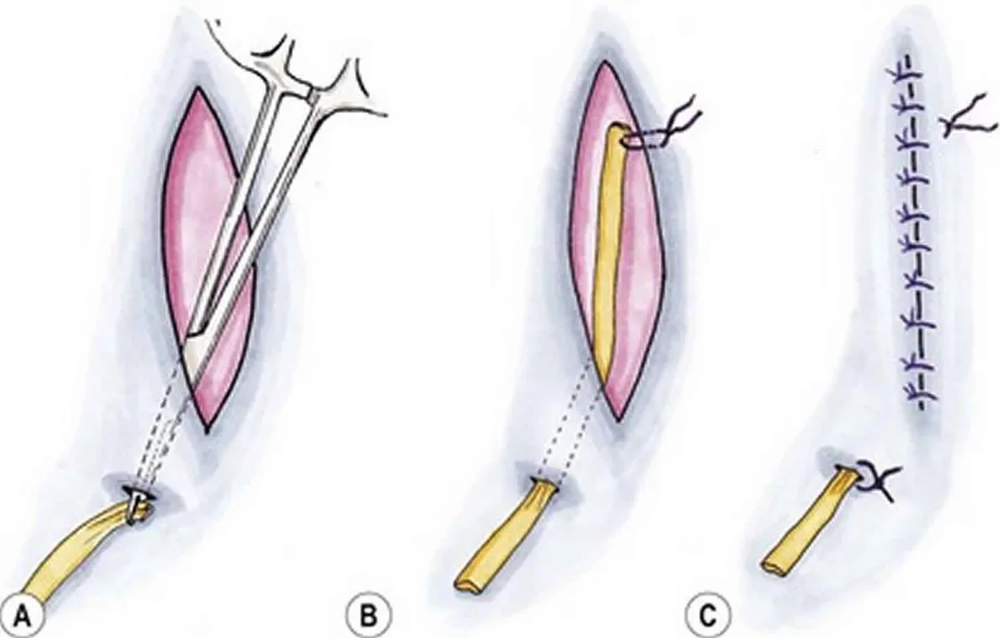
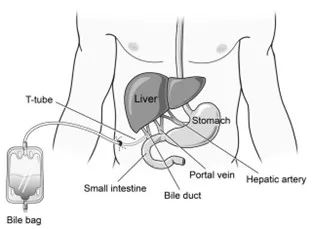
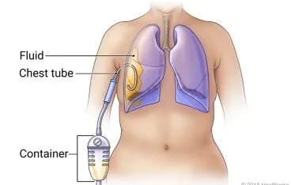
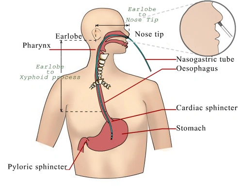

Expanded Nursing Uganda Explanation
Perform Shortening and removal of drains should be understood beyond a short definition. Link the concept to patient history, focused assessment, common risks, nursing priorities, documentation and evaluation of outcomes.
Contents, 13 sections (tap to expand)
01 SHORTENING OF DRAINS
A drain: A surgical implant that allows removal of fluid and/or gas from a wound or body cavity.
02 Examples of Drains
- Nasogastric Tube (NG Tube): This is used to drain stomach contents or provide nutrition. Shortening and removal may be necessary when the tube is no longer needed or needs adjustment.
- Catheters : Catheters can refer to various types, such as urinary catheters and central venous catheters. Shortening and removal may be needed when the catheter is ready to be taken out.
- Ventriculoperitoneal Shunts (VP Shunts) : These are used to manage excess cerebrospinal fluid in the brain. While they are typically removed in a surgical procedure, adjustments or revisions may be needed during a patient’s treatment.
- Vascular Access Ports : These are used for long-term intravenous treatments. Ports are typically removed when they are no longer required, such as when a patient completes chemotherapy.
- Jackson-Pratt Drain (JP Drain) : Used to remove fluids that build up in surgical sites, such as after a mastectomy or abdominal surgery. They are typically removed when the drainage decreases to an acceptable level.
- Hemovac Drain : Similar to the JP drain, the Hemovac drain is used to remove blood and fluids from surgical sites. It is also removed when drainage decreases.
- Penrose Drain : A soft, flat rubber tube used to allow drainage from a wound. It may be removed when the wound has healed sufficiently.
- Chest Tube : Inserted into the chest to remove air or fluids, often in cases of pneumothorax or pleural effusion. They can be removed when they are no longer needed.
- Biliary Drainage Tube : Used to drain bile from the liver or gallbladder when there is a blockage. Removal depends on the patient’s condition and the resolution of the blockage.
- Ureteral Stent : Placed in the ureter to promote urine flow, often after urological surgeries. They may need to be shortened or removed when they are no longer needed.
- Gastrostomy Tube (G-tube) : Used for long-term enteral feeding, often in patients who cannot eat normally. Removal may be considered when the patient can resume oral feeding.
03 Indications of Drains
Nasogastric Tube (NG Tube):
- Gastric decompression : To remove stomach contents and gas to relieve abdominal distention.
- Enteral feeding : To provide nutrition and medications when oral intake is not possible.
- Gastric lavage
- Medication administration
Foley Catheter (Indwelling Urinary Catheter):
- Urinary retention : To relieve the inability to urinate.
- Monitoring urinary output : In critically ill or surgical patients.
- Post-operative use : For surgeries involving the urinary tract.
- Bladder irrigation
- Urologic procedures
Ventriculoperitoneal Shunt (VP Shunt):
- Hydrocephalus : To divert excess cerebrospinal fluid (CSF) from the brain to the abdominal cavity.
- Normal pressure hydrocephalus (NPH) : To manage the accumulation of CSF in older adults.
- Traumatic brain injury
- Meningitis
Central Venous Catheter (CVC):
- Intravenous medications and fluids : To administer chemotherapy, total parenteral nutrition (TPN), or other treatments.
- Hemodialysis access : For patients with renal failure.
- Frequent blood draws : In critically ill patients or those with challenging peripheral access.
- Long-term parenteral nutrition (TPN)
- Transfusion of blood products
- Cardiac monitoring and pacing
- Administration of chemotherapy
- Emergency resuscitation
Thoracostomy Tube (Chest Tube):
- Pneumothorax : To remove air from the pleural space.
- Pleural effusion : To drain fluid or blood from the pleural cavity.
- Post-surgical use : After thoracic surgery to prevent pneumothorax or pleural effusion.
- Hemothorax
- Empyema
- Lung abscess
- Trauma
- Pulmonary embolism
04 Classifications of Drains
Drains are categorized based on various factors, including their functionality and design. Here, we discuss the classifications of drains:
Open Drains:
- These drains include corrugated rubber or plastic sheets.
- Drain fluid collects in a gauze pad or stoma bag.
- Simpler design and less expensive : They are typically cheaper and easier to assemble compared to closed drains.
- Can drain large volumes of fluid: They have a larger drainage capacity and can handle significant fluid buildup.
- Easier to monitor : They allow visual inspection of the drainage, making it easier to assess the volume and type of fluid.
- They increase the risk of infection.
- Example: Penrose drain.
Closed Drains:
- Consist of tubes draining into a bag or bottle.
- Reduced risk of infection: They create a sealed system, minimizing the risk of contamination and infection.
- More precise fluid measurement : They provide a more accurate measure of the volume of drainage.
- Less risk of leakage : The closed system reduces the chance of drainage leaking out.
- Can be connected to suction devices: They can be easily connected to suction devices for continuous drainage.
- These drains include chest and abdominal drains.
- The risk of infection is reduced.
- Example: Jackson-Pratt drain.
Active Drains:
- Active drains are maintained under suction, which can be low or high pressure.
- Both open (e.g., Sump drain) and closed (e.g., Jackson-Pratt, Hemovac drain) drains can be active.
Advantages of Active Drains:
- More efficient drainage : They provide continuous suction or pressure, leading to faster and more complete drainage.
- Can handle larger volumes of fluid : They are designed to handle significant fluid buildup and can be more effective in removing blood clots.
- Reduced risk of infection : The continuous drainage can help prevent bacterial growth and reduce the risk of infection.
- Keep the wound dry.
- Efficient fluid removal.
- Can be placed in various locations.
- Prevent bacterial ascension.
- Allow evaluation of the volume and nature of fluid.
Disadvantages of Active Drains:
- More complex and expensive : They require a power source or other components, which can increase the cost and complexity.
- Higher risk of malfunction : They have a greater chance of malfunction or failure compared to passive drains.
- More difficult to manage : They require more specialized knowledge and may necessitate frequent adjustments and monitoring.
- High negative pressure may injure tissue.
- Drains can be clogged by tissue.
Passive Drains:
- Passive drains operate without suction and rely on pressure differentials, overflow, and gravity between body cavities and the exterior.
- Passive drains include closed (e.g., NGT, Foley’s catheter, T-Tube) and open (e.g., Penrose drain, corrugated drain) drains.
Advantages of Passive Drains:
- Simpler design and less expensive : They are typically less complex and cost-effective compared to active drains.
- Less risk of complications : They generally have a lower risk of malfunction or infection compared to active drains.
- Easier to manage : They require less maintenance and can be managed by nurses and other healthcare professionals.
- Allow evaluation of volume and nature of fluid.
- Prevent bacterial ascension.
- Eliminate dead space.
Disadvantages of Passive Drains:
- Less efficient drainage: They rely on gravity and may not drain fluids effectively, especially in large volumes.
- Increased risk of infection : The open design increases the risk of contamination and infection.
- Difficult to monitor drainage : The drainage volume may be difficult to measure accurately, leading to potential complications.
- Gravity differences may affect the location of the drain.
- Drains can easily become clogged.
05 Types of Drains:
Pigtail Drain:
- Inserted under radiological guidance : This ensures precise placement and minimizes complications.
- Used to remove unwanted body fluids from organs, ducts, or abscesses : This includes fluids like pus, bile, blood, or urine.
- The tip forms a pigtail shape, facilitating drainage : This shape helps prevent the drain from getting clogged and ensures efficient removal of fluids.
- Advantages :
- Can be placed in difficult-to-reach areas.
- Low risk of tissue damage due to its flexibility.
- Effective in draining thick, viscous fluids.
- Disadvantages:
- May be prone to blockage.
- Requires radiological expertise for insertion and maintenance.
Hemovac Drain:
- A fine tube with multiple holes at the end : Allows for efficient collection of fluids from a larger area.
- Attached to an evacuated glass bottle for suction : Provides continuous suction, promoting rapid drainage.
- Drains blood under the skin : Often used for post-operative drainage following surgery or trauma.
- Advantages:
- Efficient in removing blood and other fluids.
- Provides constant drainage, reducing the risk of blood clots forming.
- Disadvantages:
- Risk of suction malfunction or breakage.
- May cause discomfort or pain if placed incorrectly.
- Requires regular emptying and monitoring.
Penrose Drain (Open Drain):
- A soft, flexible drain : Easy to insert and adapt to various anatomical structures.
- Empties into absorptive dressing material passively: Relies on gravity and capillary action for drainage.
- Prevents fluid from moving from areas of greater pressure to areas of lesser pressure : Helps control fluid accumulation and reduce swelling.
- Advantages :
- Simple design and low cost.
- Can be used for short-term drainage.
- Minimal risk of mechanical complications.
- Disadvantages:
- Less efficient drainage than closed systems.
- Increased risk of infection due to the open design.
- Not suitable for large volume drainage or high-risk areas.
T-Tube:
- Placed into the common bile duct : Allows for drainage of bile after biliary surgery.
- Connected to a small pouch (bile bag) : Collects and allows for easy monitoring of bile drainage.
- Used for temporary post-operative drainage of the common bile duct removed once the bile duct is healed.
- Advantages:
- Helps prevent bile duct obstruction.
- Facilitates healing by allowing bile to drain.
- Allows for monitoring of bile drainage.
- Disadvantages:
- Can cause discomfort or pain.
- Requires regular emptying and monitoring.
- May be prone to blockage or leakage.
Chest Tube (Closed Drain):
- Used to drain hemothorax, pneumothorax, pleural effusion, chylothorax, and empyema : Effective for removing fluid and air from the chest cavity.
- Inserted into the pleural space in the 4th intercostal space above the upper border of the rib below (4th to 6th) : Requires careful placement to ensure effectiveness and minimize complications.
- Advantages :
- Efficient in removing fluids and air from the chest cavity.
- Reduces pressure on the lungs, allowing for better breathing.
- Minimizes the risk of infection due to the closed system.
- Disadvantages :
- Requires specialized training and equipment for insertion and management.
- Can cause pain or discomfort.
- May be prone to kinking or blockage.
- Complications to assess for include arterial thrombosis, air embolism, hematoma, bleeding, and infection.
Nasogastric Tube (NG Tube):
- Passed through the nostrils to the stomach : Allows for access to the stomach for various procedures.
- Indications include gastric juice aspiration, lavage in cases of poisoning, overdose medication, and feeding: Versatile tool for managing stomach contents and providing nutritional support.
- Advantages :
- Provides access to the stomach for various procedures.
- Relatively safe and easy to insert.
- Can be used for short-term or long-term management.
- Disadvantages :
- Can cause discomfort or irritation.
- May cause nausea or vomiting.
- Complications include epistaxis, aspiration, and erosions in the nasal cavity and nasopharynx.
Urinary Catheters:
- Hollow, flexible tubes used to collect urine from the bladder : Provides a way to drain urine from the bladder.
- Indications include relieving urinary obstructions, managing bladder weakness or nerve damage, draining the bladder during and after surgery, and treating urinary incontinence: Essential for managing urinary issues and ensuring bladder health.
- Catheter materials can include rubber, silicone, or latex
- Advantages :
- Allows for effective urine drainage.
- Reduces urinary tract infections.
- Provides a way to monitor urine output.
- Disadvantages :
- Can cause discomfort or pain.
- Risk of infection if not properly maintained.
- May be associated with bladder stones or urinary retention.
06 PROCEDURE FOR SHORTENING AND REMOVAL OF DRAINS
Requirements
- Top Shelf Bottom Shelf
- Stitch removing pack containing Bottle of antiseptic solution
- – Stitch Scissors
- – Non-toothed dissecting forceps
- – 2 dressing forceps
- – Cotton wool swabs
- – Gauze
- – Sterile gloves
- – Sterile safety pin
- – Sterile dressing towel
- – Receiver
Procedure
- Steps Action Rationale
- 1. First clean the wound as for surgical dressing. To reduce the risk of spreading infections.
- 2. Cut and remove the stitch between the drain and the skin. To loosen the drain.
- 3. Take out the drain and place it in a receiver. To prevent cross-infection.
- 4. Gently compress the area, clean the wound, and apply a dressing. Compression is done to drain the wound.
- 5. Finish up as for simple dressing. To protect against inversion of microorganisms.
- 6. Document procedure. For follow-up care.
- Steps Action Rationale
- 1. Clean wound as for surgical dressing. To prevent cross-infection.
- 2. Pull the drainage tube with the dissecting forceps. If it is the first dressing post-operatively, there will be a need to cut the stitch between the drain and the skin before adjusting to the prescribed length. To loosen the drainage.
- 3. Use sterile forceps or gloves to insert the safety pin across the drain and to close the pin. To secure the drain in position and to prevent infection.
- 4. Dress the wound and finish as for a simple dressing. To prevent inversion of microorganisms.
- 5. Document the procedure. For easy continuity of care.
Hospital Standards Procedures.
07 Emptying a Drain
- Steps Action Rationale
- 1. Perform hand hygiene. Hand hygiene reduces the risk of infection.
- 2. Collect necessary equipment. Having the required supplies readily available, such as a drainage measurement container, non-sterile gloves, waterproof pad, and alcohol swab, ensures a smooth and efficient procedure.
- 3. Apply non-sterile gloves and goggles or a face shield where necessary. Personal protective equipment (PPE) reduces the transmission of microorganisms and protects against accidental exposure to body fluids.
- 4. Maintaining principles of asepsis, remove the plug from the pouring spout as indicated on the drain. Aseptic technique is crucial to prevent contamination. Opening the plug away from your face reduces the risk of accidental splashing of body fluid.
- 5. Gently tilt the opening of the reservoir toward the measuring container and pour out the contents. Note the character of drainage: color, consistency, odor, and amount. Pouring away from yourself prevents exposure to body fluids. Monitoring and documenting the characteristics of drainage are essential for patient care and record-keeping.
- 6. Swab the surface of the pouring spout and plug with an alcohol swab. Place the drainage container on the bed or a hard surface, tilt it away from your face, and compress the drain to flatten it with one hand. Swabbing with alcohol maintains cleanliness. Flattening the drain before closing helps expel air, ensuring efficient functioning of the drainage system.
- 7. Place the plug back into the pour spout of the drainage system, maintaining asepsis. Reinserting the plug while maintaining aseptic principles reestablishes the vacuum suction in the drainage system.
- 8. Secure the device onto the patient’s gown using a safety pin; ensure the drain is functioning; make sure that enough slack is present on the tubing. Securing the drain minimizes the risk of inadvertent removal. Providing adequate slack accommodates patient movement and prevents tension at the drain insertion site.
- 9. Discard drainage according to agency policy. Proper disposal procedures protect healthcare workers against exposure to blood and body fluids.
- 10. Remove gloves and perform hand hygiene. Hand hygiene should be performed after removing gloves, as gloves are not puncture-proof or leak-proof. Hands may become contaminated during glove removal.
- 11. Document the procedure and findings accordingly. Report any unusual findings or concerns to the appropriate healthcare professional. Documentation ensures accurate recording of drainage and any changes. If multiple drains are present, numbering and noting their locations in the chart is essential. Any significant changes or concerns must be reported to the healthcare provider per agency policy.
08 Removal of Drains
- Steps Action Rationale
- 1. Confirm that the prescriber’s order correlates with the amount of drainage in the past 24 hours. Ensuring the prescriber’s order aligns with recent drainage amounts is crucial for safe removal. It helps avoid early removal if the drainage is not yet at an acceptable level.
- 3. Assemble supplies at the patient’s bedside: dressing tray, sterile suture scissors or sterile blade, cleansing solution, tape, garbage bag, outer dressing. Organizing supplies in advance ensures efficiency and readiness for the procedure, enhancing patient safety and comfort.
- 4. Apply a waterproof drape or mackintosh for setting the drain onto once it has been removed. This provides a designated place for the removed drain, preventing contamination and maintaining cleanliness.
- 5. Perform hand hygiene. Hand hygiene before the procedure reduces the risk of introducing microorganisms from other sources to the patient.
- 6. Apply non-sterile gloves and PPE accordingly. Wearing non-sterile gloves and appropriate PPE as assessed at the point of care reduces the risk of transmission of microorganisms and provides added protection against contamination.
- 7. Release suction on the reservoir and empty; measure and record volumes greater than 10 ml. Remove the dressing. Releasing suction ensures safe removal. Measuring and documenting the drainage volume is crucial for patient care and record-keeping.
- 8. Clean and dry the incision and drain site following principles of asepsis. Preparing the wound and surrounding area through aseptic cleaning minimizes the risk of infection.
- 9. Carefully cut and remove the securing suture following principles of asepsis. Removing the suture safely is essential to avoid complications and ensure smooth removal of the drain.
- 10. While holding two to three 4 × 4 sterile gauze in the non-dominant hand, stabilize the skin. Sterile gauze helps absorb any additional drainage during the removal process, reducing the risk of introducing microorganisms. Stabilizing the skin minimizes discomfort to the patient during the procedure.
- 11. Ask the patient to take a deep breath and exhale slowly; remove the drain as the patient exhales. Firmly grasp the drainage tube close to the skin with the dominant hand, and with a swift and steady motion, withdraw the drain. Patient cooperation, distraction, and timed removal reduce discomfort. The gentle resistance felt during removal is expected, but if resistance is strong, taking a pause and encouraging relaxation is essential.
- 12. Place the drain and tubing onto a waterproof pad or into a garbage bag. Remove gloves. Proper disposal prevents contamination of the environment and maintains hygiene.
- 13. At this point, some nurses may clean and dry the wound. The decision to clean the wound can vary based on the specific situation and healthcare provider’s preferences.
- 14. Dress the wound with a sterile dressing. Dressing the wound post-removal is essential as drain sites may continue to drain for a few days.
- 15. Discard the drain and garbage. Proper disposal follows agency policy and decreases the risk of exposure to blood and body fluids for others.
- 16. Perform hand hygiene. Hand hygiene after the procedure minimizes the risk of contamination.
- 17. Assess the dressing 30 minutes after drain removal. Likewise, ask the patient to call if they notice any increased drainage from the site. Monitoring for changes in drainage after removal is essential for patient safety and early detection of complications.
- 18. Document the procedure (including drain removal, drain output and characteristics, how the patient tolerated the procedure, dressings applied) accordingly. Report any unusual findings or concerns to the appropriate healthcare professional. Accurate and timely documentation and reporting are crucial for patient care and safety, ensuring that any concerns are addressed promptly.
09 CARE OF WOUNDS WITH DRAINAGE
Important Points in the Care of Closed Drainage
- Step Action Rationale
- 1 Maintain the end of the tube from the wound below the water in the drainage bottle. This prevents air from passing back up the tube into the wound.
- 2 Seal the tubing first with either clips or artery forceps before emptying the bottle. To prevent air entry into the lungs.
- 3 Measure the amount of water or antiseptic in the drainage bottle and subtract this amount from the total when measuring the drainage. To get the correct amount of fluid drained from the wound.
- 4 Observe for any abnormal deposits, colour, and odour. To aid diagnosis and follow up/progress.
- 5 Keep a clip or artery forceps at the bedside incase of an accident to the tubing. To be able to clip the tube immediately to prevent air going to the lungs in case of accident to the tubing.
- 6 Maintain sterility of the bottle and should never be lifted up to the bed level or above. To maintain asepsis and also to prevent back flow of fluid from the drainage chamber to the pleural cavity.
10 Nursing Uganda Clinical Lens
Use Perform Shortening and removal of drains as a practical nursing topic, not only a memorized definition. Turn the topic into practical nursing knowledge: meaning, assessment, care priorities, teaching and evaluation.
- What to understand first: define perform shortening and removal of drains, identify the normal or expected pattern, then explain what changes when the patient is unwell.
- Why it matters in care: the nurse must recognize risk early, explain findings clearly, document accurately and know when to escalate.
- How to revise it: connect each point to assessment, nursing diagnosis or care problem, intervention, rationale and evaluation.
11 Assessment Guide
- Key definitions, patient history, focused observations and risk factors.
- Findings that are normal, abnormal or urgent.
- Resources, referral needs and documentation requirements.
12 Nursing Priorities, Rationales and Outcomes
- Protect safety, comfort, dignity and infection prevention.
- Provide clear care, education and escalation when needed.
- Evaluate response and record what changed.
The rationale for these priorities is patient safety: nursing actions should prevent deterioration, reduce discomfort, support recovery and create clear evidence for the next caregiver.
- Expected outcome: The topic is understood in a way that supports safe nursing judgement and revision.
13 Patient Teaching and Revision Check
- Explain perform shortening and removal of drains in simple language the patient or caregiver can repeat back.
- Teach warning signs, medicine or follow-up instructions, hygiene or lifestyle points where relevant.
- For exams, prepare a short answer using: definition, causes or risk factors, signs, assessment, management, complications and prevention.
- For ward practice, document baseline findings, actions taken, patient response and the plan for review.
Illustrations and Diagrams (27)








19 more diagrams available, open the lesson for full illustrations.
Related Video Lectures
Watch nursing lecture videos on YouTube for this topic. Opens in a new tab.
Watch on YouTubeExternal link: YouTube may use its own cookies and terms. Nursing Uganda is not affiliated with YouTube.